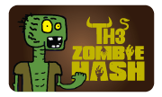
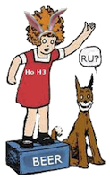

Holy Sh!t Batman, What's The Fall Down (Down) Classic?
The Fall Down (Down) Classic is a Chicago destination hash weekend featuring three sensational trails (plus an Unnofficial Rooftop Kickoff Pre-lube), beer, shiggy, movieoke, a day trip, beer, costumes, crash space, beer, old traditions, a dozen hares, new traditions, flabongos, beer, more costumes, private event spaces, multiple giveaways, beer, and something to cure your hangover on Sunday morning. On top of all that, you overachievers can extend your hashtastic weekend with a pre-lube presented by the Thirstday H3 and post-lubes by the Chicago H3 and the Holiday Orphans H3!
Fantastic! Incredible! Holy Hellfire Sh!t, Tell Us About It M*therf*cker!
For just $40 (!!) your Fall Down (Down) Classic rego is packed with three trails, a rooftop pre-lube, and both private event evenings (Fri and Sat night). The most up-to-date schedule of debauchery is listed below. Complete details about hares and location will be released soon... stay tuned!
| Date/Time | Event | Cost | ||||||
|---|---|---|---|---|---|---|---|---|
Thur, Oct 27 - 7pm HST |
Pre-lube #1: The TH3 Zombie HASH!In the grand TH3 tradition, we'll roam the streets and alleys of Chicago as the undead. Get your make-up and fake (or real) blood, your tattered clothes, and those lovely skin lesions ready for the only trail of the year that'll have you seriously contemplating necrophilia!
|
$8 | ||||||
Fri, Oct 28 - 2pm HST |
Pre-lube #2: Unofficial Weekend Kickoff at Glory's Rooftop Hole!Designed especially for out-of-towners, truants, and the unemployed, this Friday afternoon get-together will socially lubricate you adequately for the evening's festivities!
|
Included with your FDDC Rego! | ||||||
Fri, Oct 28 - 7pm HST |
Official Weekend Kickoff: SUPERSTAR!Dress as your favorite rock star, movie star or porn star as we hash through the urban landscape of Chicago in search of our very own private bar and karaoke on-after! A keg deal is in place, as are shot and beer specials just in case the hash beer runs dry and you haven't out karaoke'd yourself quite yet!
|
Included with your FDDC Rego! | ||||||
Sat, Oct 29 - 1pm HST |
The Main Event!: CHILDREN OF THE SHIGGYPrepare yourself for your choice of two shigtastic woodsy trails outside Chicago's city limits. The hash limousine will carry you in style deep into a forest preserve where you may encounter water crossings, brambles, shoe-sucking mud, poison ivy, and storm tunnels. Save your costumes for the on-after at this trail, and dress for the shiggy! There will be an alternate trail for those who aren't yet comfortable with Level 4+ shiggy or who are gimpy. This alternate option will be primarily on trails and will join at the same beer check and on-in as the super shiggy trail. But wait, there's more! After trail and a proper pack feeding, the hash limo will escort you back into the city for a second private room event with hosted kegs and a hasher only evening of Chicago's very own Movieoke! That's right... it's like karaoke, but with your favorite movie scenes instead of songs! Props, ad libbing, and making a complete a$$ out of yourself are highly encouraged!
|
Included with your FDDC Rego! | ||||||
Sun, Oct 30 - 11am HST
|
The Hangover Trail: THE FATBOY BOO-BOONurse that morning-after glow with a walkers-only stroll in your best ghost (read: bed sheet) attire! Use this trail's medicinal bloody mary's and mimosas to revitalize your chakras and to reminisce about where the previous evening started to go horribly wrong. For the ambitious souls looking to maximize their hashing opportunities this weekend, you'll be able to easily get from the Hangover Trail to the CH3 post-lube in the afternoon.
|
Included with your FDDC Rego! | ||||||
Sun, Oct 30 - 2pm HST
|
Post-lube #1: Chicago H3 Halloween TrailWhat better way to wind down from the Fall Down (Down) Classic than by ratcheting it back up only a couple hours later with Chicago's oldest hash! The residents of the DFL Haus proudly present this year's CH3 Halloween trail on Sunday afternoon. More details will be posted as soon as they're available.
|
$8 | ||||||
Mon, Oct 31 - 7pm HST |
Post-lube #2: Holiday Orphans H3's Halloween TrailAs is the HO H3's tradition, you're invited to come spend time this holiday with the people who will always love you no matter who you sleep with--the hash! This Monday trail will be another costumed free-for-all. More info on trail format will be posted as soon as it's available.
|
$8 |


I'm Cumming From Out Of Town And I'm Broke, Can I Stay With You?
We are expecting many visitors from out of town and are prepared to help coordinate crash space for anyone seeking it. Please email canicrashatyourplace@gmail.com with your request.
Is It True There Are Special Giveaways For Visiting Kennels?
It most certainly is! Any non-Chicago kennel that brings four or more wankers will be given special Chicago-themed giveaways as a thank you. So gather your sluttiest bimbos and hunkiest wankers and pile into a car headed for Chicago on October 27!